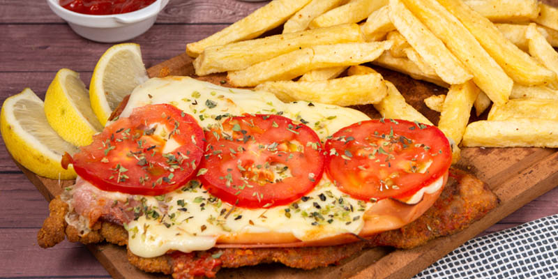

Milanesa napolitana is a traditional Argentine dish originating from Buenos Aires. It consists of a milanesa steak that's breaded, fried, then topped with a slice of ham, tangy tomato sauce, and thick slices of mozzarella, which will melt under the broiler. It is typically served with french fries on the side.
Meal prep time : 1 hour 10 minutes
Servings : 4